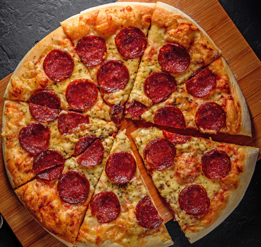

Wiffle Ball
How does the game work?
Wiffle ball is a scaled back variation of baseball that was developed in 1953 in Fairfield, Connecticut.
Originally, it was intended to be played in confined space or otherwise small area, but became a popular
outdoor activity. The sport is played using a perforated light-weight plastic ball and a long hollow
plastic bat. Two teams of one to five players each attempt to advance imaginary runners to home plate,
and score, based on where each batter places the ball on the field. The term Wiffle ball may refer to
the sport as a whole, or the ball used in the sport. Wiffle is a registered trademark of Wiffle Ball,
Inc. and was derived from the slang word whiff meaning to strike out.
Spikeball
How does the game work?
Roundnet (also known as Spikeball) is a ball game created in 1989 by Jeff Knurek, inspired primarily by
concepts from volleyball. The game is played between two teams, usually with two players each. Players
initially line up around a small trampoline-like net at the start of a point and starts with a serve
from one team to another. Teams alternate hitting the ball back to the net. Roundnet experienced a
revival in 2008 when Spikeball Inc. began manufacturing and promoting its roundnet equipment,[3] with
"spikeball" becoming a common name for the game.
Cornhole
How does the game work?
Cornhole (also known regionally as sack toss, or bags) is a lawn game popular in North America in which
players or teams take turns throwing fabric bean bags at an inclined board with a hole in its far end.
The goal of the game is to score points by either landing a bag on the board (one point) or putting a
bag through the hole (three points).
Crossnet

How does the game work?
Four square meets volleyball with our patented four way volleyball net. Perfect for the upcoming
tailgate, family BBQ, or trip to the beach. Volleyball player or not, CROSSNET is a great way to get
everybody playing and feeling like a kid again. Height adjustable and easy to set up anywhere.
